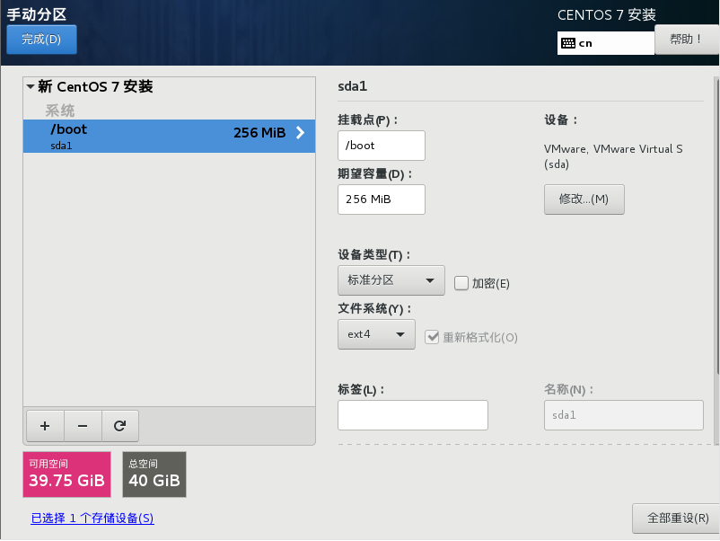
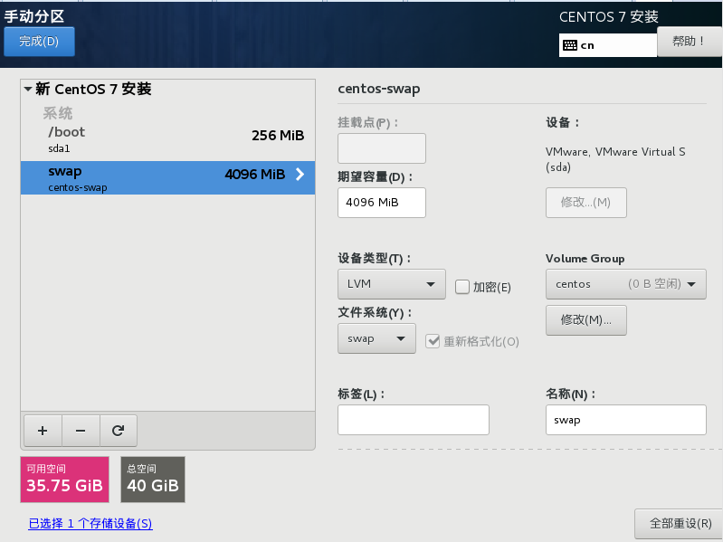
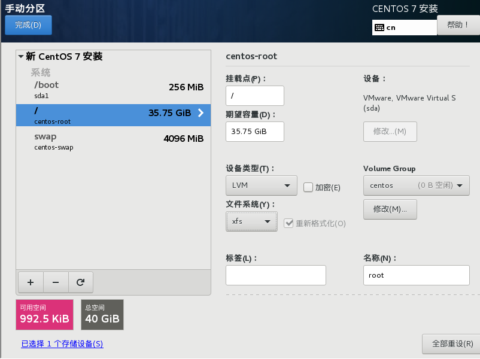
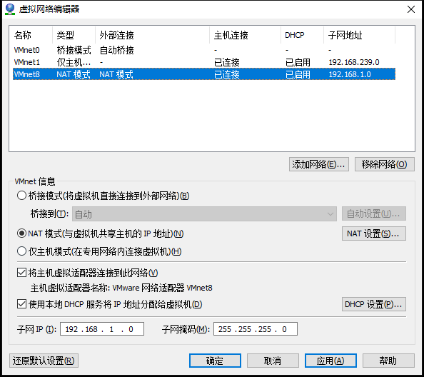
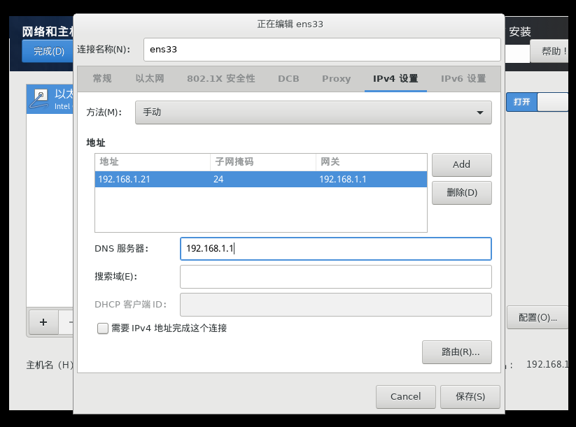
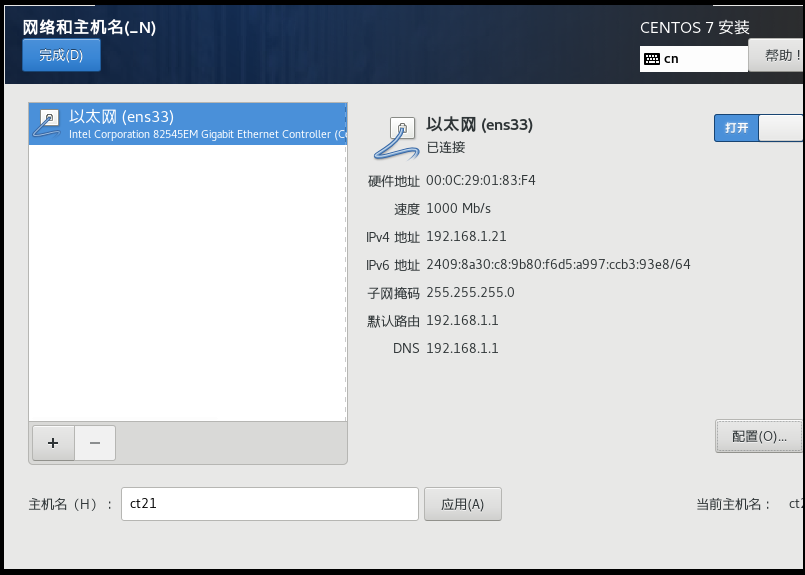
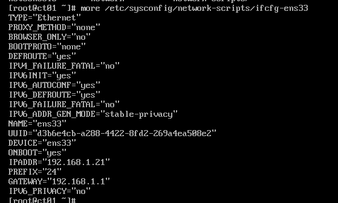
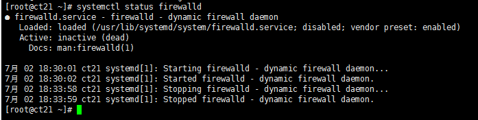

CentOS 7是CentOS项目发布的开源类服务器操作系统，于2014年7月7日正式发布。
CentOS 7是一个企业级的Linux发行版本，它源于RedHat免费公开的源代码进行再发行。 它内核更新至3.10.0、支持Linux容器、支持Open VMware Tools及3D图像即装即用、支持OpenJDK-7作为缺省JDK、支持内核空间内的iSCSI及FCoE、支持PTPv2等功能。
新建虚拟机，选择自定义菜单
桥接模式（虚拟机直连路由器）：相当于一台独立的计算机
NAT模式：虚拟机可以通外网，但外网不能访问虚拟机
host-only： 主机和虚拟机通网，不通外网
设置boot分区，256MiB~1024MiB，ext4文件格式
设置swap分区，4096MiB(4g)，swap文件格式
设置根分区，剩余全部，xfs文件格式
根据虚拟机的网络模式配置对于的IP
  vi /etc/sysconfig/network-scripts/ifcfg-ens33 编辑网卡配置
service network restart 重启网络服务
ip addr 查看网络
systemctl stop firewalld 关闭防火墙
systemctl disable firewalld 禁用防火墙
systemctl status firewalld 查看状态
vi /etc/seliunx/config 打开配置文件并做如下修改
SELIUNX=disabled
vi /etc/hostname
使用rsa算法生成密钥对（私钥-公钥），被登陆服务器保存私钥，让登陆方携带公钥即可实现免密码登陆
ssh-keygen -t rsa 然后一路回车，执行完成后即创建了 公钥、私钥文件
cd /root/.ssh
cat id_rsa.pub >> authorized_keys 将公钥写入信任文件，这样就实现了本机对本机的免密码登陆
如果是复制的密钥文件，需要保证 authorized_keys id_rsa 的权限为600
以本机的密钥为基础将私钥和信任文件拷贝至其他机器，并保证authorized_keys id_rsa 的权限为600
yum install 软件 安装软件
lsblk -f 查看分区情况
fdisk /dev/磁盘 进入磁盘分区操作， m显示帮助信息，n创建新分区，w保存修改
mkfs -t ext4 /dev/分区 将分区格式化为ext4格式
mount /dev/分区 /目录 临时挂载，重启后失效
vi /etc/fstab 编辑挂载配置可实现永久挂载
mount -a 按配置挂载
umount /dev/分区 或 /目录 取消挂载
df -h 查询磁盘使用情况
du -ach --max-depth=1 /目录 查询指定目录的磁盘使用情况
软链
有问题的软链
可执行文件
目录
设备文件 block,char,fifo
/bin 软链/usr/bin，全称binary，二进制文件，这里的文件都是可以运行的
/sbin 软链/usr/sbin，全称Super Binary，二进制文件，只有root权限的用户才可运行
/etc 配置文件目录
/home 家目录，除了root用户以外其他用户的主目录，
/root 系统管理员root的家目录
/proc 全称process，进程目录，Linux正在运行的进程
/tmp 全称temporary，临时文件，系统重启会清理内容
/usr 用户安装的软件，类似于Windows的Program Files
/var 程序和系统日志
/dev 外接设备目录，需要挂载后方可使用，参考mount命令
/mnt 外接设备的挂载目录
list，列出目录下的文件和目录
-a 列出目录下的所有文件，包括以 . 开头的隐含文件
-A 显示除 “.”和“..”外的所有文件
-k 以 k 字节的形式表示文件的大小
-l 列出文件的详细信息
-s 在每个文件名后输出该文件的大小
-t 以时间排序
-R 列出所有子目录下的文件
-X 以文件的扩展名(最后一个 . 后的字符)排序
ls -l /home |grep "^-"|wc -l 统计home目录下文件的数量
ls -l /home |grep "^d"|wc -l 统计home目录下目录的数量
ls -lR /home |grep "^-"|wc -l 统计home目录和子目录下文件的数量
ls -F|grep "@" 查看当前文件夹下的链接文件
ls -F|grep "*" 查看当前文件夹下的可执行文件
文件查找， find 查找范围 [选项]
-a 并且； -o 或者
-name 按文件名查找，支持通配符 * ? []
-iname 按文件名查找，支持通配符 * ? []，不区分大小写
-user 按归属用户查找
-nouser 按无归属用户查找
-ctime 按创建时间查找
-mtime 按修改时间查找
-atime 按访问时间查找
+10 10天前；10 10天前的当天；-10 10天内
-size 按大小查找
k=KB; M=MB; G=GB
+25k 大于25KB； 25k 等于25KB； -2M 小于2MB
-exec {} \; 执行命令，大括号和反斜杠之间需要保留空格，并以分号结尾
find /usr -name mysqld 在/usr目录下查找mysqld文件
find /var -iname *.log 在/var目录下查找所有的日志文件
find /root -user root 在/root目录下查找归属root用户的文件
find /root -nouser 在/root目录下查找没有归属的文件
find /root -size +1k -a -size -2k 在/root目录下查找1k~2k的文件
find /docker -size +1k -a -size -5k -exec ls -lh {} \; 在/docker目录下查找1k~5k的文件，并列出详细信息
字符串查找， grep [选项] 字符串 文件名
-i 忽略大小写
-v 排除
grep time-zone my.cnf 在my.cnf文件中查找time-zone的配置值
yum install zip unzip -y
压缩文件 zip 压缩文件名 原文件
压缩命令 zip -r 压缩文件名 原目录
zip a.zip a.txt 把a.txt文件压缩至a.zip内，如果压缩包存在，则追加内容
zip -r a.zip dr 把dr目录及其内容压缩至a.zip内
合并压缩卷：对于较大、较多的文件，无法一次性上传至Linux系统，可在window系统下进行分卷压缩，再上传后合并解压
cat abc.zip.* > abc.zip 合并分压卷
unzip abc.zip 解压
压缩文件 tar -cvf 压缩文件名 原文件
解压文件 tar -xvf 压缩文件名
-z 压缩，无此参数即压缩率为零
-c 打包
-x 解压
-v 显示过程
-f 指定压缩文件名
-r 追加内容
tar -cvf a.tar a.txt b.txt 把a.txt b.txt文件打包至a.tar内
tar -czvf a.tar.gz a.txt b.txt 把a.txt b.txt文件打包至a.tar.gz内
tar -rvf a.tar c.txt 把c.txt文件压缩至a.tar内，如果压缩包存在，会追加内容
tar -cvf a.tar dr 把目录压缩至a.tar内，如果压缩包存在，会覆盖原有内容
tar -xvf a.tar 解压a.tar到当前目录
tar -xzvf a.tar.gz 解压a.tar.gz到当前目录
tar -xzvf a.tar.gz -C dd 解压a.targz到dd目录
load average a b c 平均每1 5 15分钟系统压力，如果（a+b+c）/3 > 0.6，说明系统压力过大
按键盘E键可以展开所有CPU信息
vmstat -n 2 3 每隔2s采集1次，共3次
mpstat -P ALL 2 3 查看所有CPU核心信息
pidstat -u 1 -p 进程id 查看单个进程的CPU占用情况
free -m 以mb为单位查询系统内存使用情况
pidstat -p 进程id -r 2 每隔2s查看单个进程的内存占用情况
df -h 以人类可读的方式查看硬盘使用情况
iostat -xdk 2 3 每隔2s采集1次，共3次，查看磁盘IO情况
ifstat l 查看网络情况
firewall-cmd --state 查看防火墙状态
firewall-cmd --zone=public --list-ports 查看开放的端口
firewall-cmd --zone=public --add-port=8080/tcp --permanent 永久性开放8080端口
firewall-cmd --zone=public --remove-port=8080/tcp --permanent 永久性关闭8080端口
firewall-cmd --reload 更新防火墙规则
-a 显示所有socket，包括正在监听的
-n 以数字形式显示地址和端口号
-r 显示核心路由表，格式同“route -e”
-t 显示当前连接卸载状态
-v 显示正在进行的工作
-p proto 显示proto指定的协议的连接
-b 显示在创建每个连接或侦听端口时涉及的可执行程序
-f 显示外部地址的完全限定域名(FQDN)
-q 显示所有连接、侦听端口和绑定的非侦听 TCP 端口。
-s 显示每个协议的统计
-x 显示 NetworkDirect 连接、侦听器和共享端点
-y 显示所有连接的 TCP 连接模板。无法与其他选项结合使用
netstat -nutlp 查看进程及其使用的端口
w root 查看root用户连接信息
who 查看当前用户